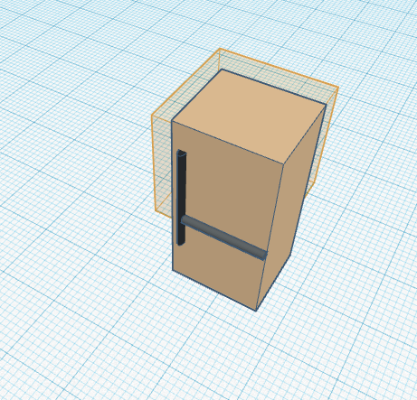
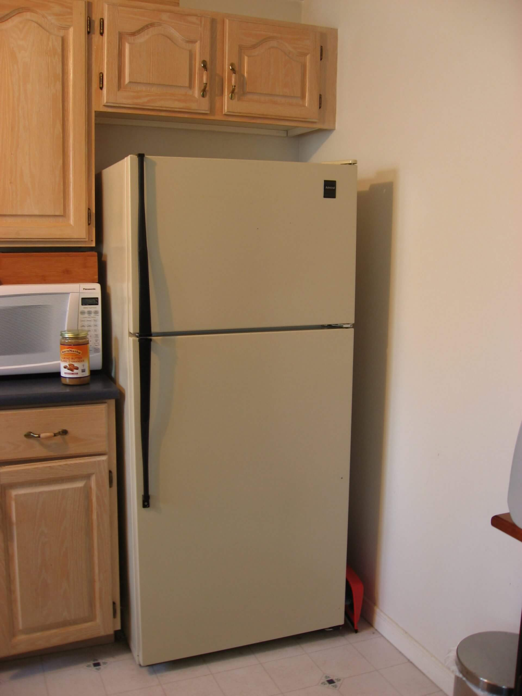

8/19/2022 Today I made a website wow im so happy
9/2/2022 This week we learned about mechanical engineering + we had to designed something on tinkercat, We have a project to do next week.  
9/16/2022 we did a lot,we disigned a goldberd machine and our challenge day we did our boat challenge day and we did a lot of updating the website. We also did the ruth goldberd machine and we cut it.
9/23/2022 This week we did our golberd machine and we did it, I don't remember challenge day but i'm guessing my group skipped it because we were beind on the golberd machine, we finished it and it all went well, we finished it.
9/30/2022 Mr.Poole got covid and he couldn't come to class for the whole week. We started to design a Prosthetic for any kind of animal we wanted to do and we didn't do a challenge day because Mr.poole was absent.
10/7/2022 Mr.Poole came back and we had computers and basically we had to get a laptop and disect it then put together all the parts and do it on our worksheet. for challenge day we needed to go out and check if there was more doors or wheels in the campus, and he let us go around the campus and check.

10/14/2022 This week was a good week, WE needed to design a bomb and a rocket to go over the field goal in the football field, for challenge day we needed to make an object and make it try to go as close or into a barrel, and my group wasn't close at all but it was fun. Our group did a prototype and it went decent bt it wasnt that good, we might do mentos and coke but probably not.